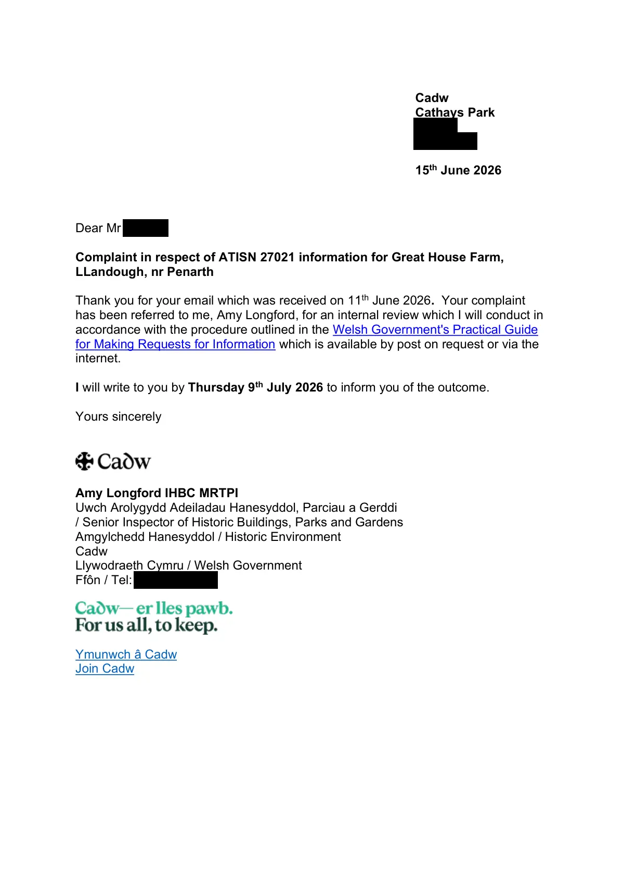

GHF-E106-R99-A1 acknowledgement only
Internal Review Acknowledgement Letter.pdf

Transcript
Cadw Cathays Park Cardiff [address redacted] 15th June 2026 Dear Requester Complaint in respect of ATISN 27021 information for Great House Farm, LLandough, nr Penarth Thank you for your email which was received on 11th June 2026. Your complaint has been referred to me, Amy Longford, for an internal review which I will conduct in accordance with the procedure outlined in the Welsh Government's Practical Guide for Making Requests for Information which is available by post on request or via the internet. I will write to you by Thursday 9th July 2026 to inform you of the outcome. Yours sincerely Amy Longford IHBC MRTPI Uwch Arolygydd Adeiladau Hanesyddol, Parciau a Gerddi / Senior Inspector of Historic Buildings, Parks and Gardens Amgylchedd Hanesyddol / Historic Environment Cadw Llywodraeth Cymru / Welsh Government Ffôn / Tel: [phone redacted] Ymunwch â Cadw Join Cadw Annwyl ………. Cwyn mewn perthynas â ATISN [insert number and the title of the request]
Read more
Diolch i chi am eich [llythyr/neges e-bost] a ddaeth i law ar [insert date]. Mae eich cwyn wedi'i drosglwyddo i mi ar gyfer adolygiad mewnol. Byddaf yn cynnal yr adolygiad yn unol â'r weithdrefn a amlinellwyd yng Nghanllaw ymarferol Llywodraeth Cymru ar wneud ceisiadau am wybodaeth sydd ar gael drwy'r post ar gais neu ar y rhyngrwyd. [Byddaf/Bydd (name)] yn ysgrifennu atoch erbyn [insert date] i'ch hysbysu am y canlyniad. Yn gywir [insert your name and contact details]
Artifact description
Acknowledges the internal review request, identifies the case officer, and attaches a letter with key dates.
| Catalogue ID | GHF-E106-R99-A1 |
|---|---|
| What it is | PDF document from Welsh Government / Cadw. Attached to an email received on 15 June 2026, their reference ATISN 27021. 2 pages. |
| From | Welsh Government / Cadw |
| Email received | 15 June 2026 |
| Their reference | ATISN 27021 |
| Pages | 2 |
| File | Internal Review Acknowledgement Letter.pdf (237 KB) |
| State | Read |
Our integration
Part of the FOI internal review thread with Welsh Government / Cadw opened 17 May 2026. The thread's standing classification is “partial”. Statutory time: met.
Concern to test: whether this reply answers the question as asked, or a narrower one. Not checked against the original request wording here.
Related: GHF-E106-R101-A1 — ATISN 27021 Review Ressponse.pdf · GHF-E106-R37-A1 — ATISN 27021 response letter · GHF-E106-R37-A2 — ATISN 27021 doc 1: farmhouse survey photo, 29 July 1988 · GHF-E106-R37-A3 — ATISN 27021 doc 2: barn survey photo, 29 July 1988 · GHF-E106-R95-A1 — GGAT assessment of Great House Farmhouse (filed August 1990) · GHF-E106-R97-A1 — Cadw survey photograph: barn, 29 July 1988 · GHF-E106-R98-A1 — Cadw survey photograph: farmhouse, 29 July 1988 · The covering email · What They Don’t Say: WTDS-5c5b715a-1, WTDS-5c5b715a-2, WTDS-5c5b715a-3, WTDS-5c5b715a-4 · EV-0489 in the evidence catalogue · Timeline · Disclosure Dartboard